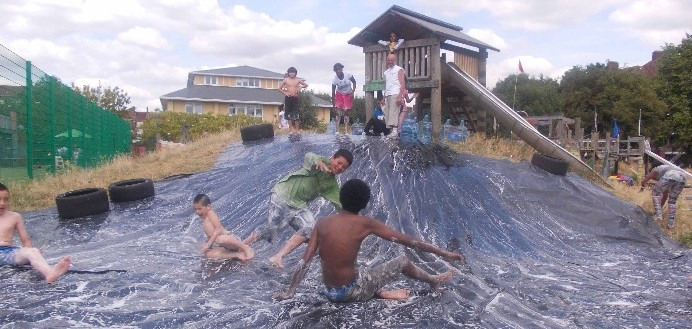
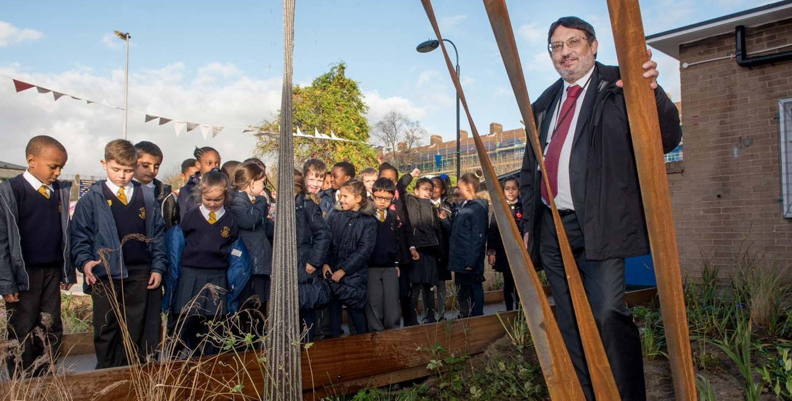
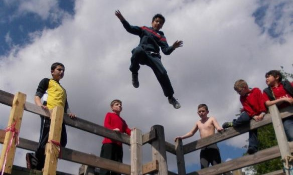

Why the redevelopment of White City Estate will have a severe impact on our children.
This proposal will have a significant impact on our children. Learn more about how it will affect them.
Those that will suffer most from this proposal will be our children. They have already begun to pay the price. Because the council decided years ago that they will proceed with this development, they have spent the last few years running down the children's provisions on the estate. In 2014 the White City Adventure Playground won the Adventure Playground of the Year award . The judges concluded that “White City is one of the newer adventure playgrounds in London, having evolved over recent years from a more standard childcare facility to the fully-fledged, award-winning adventure playground that it is today”. Last year the council stripped out the equipment because it “needed maintenance”. No consultation with the community, no attempt to repair or improve, no concern for the children affected.
The Adventure Playground was more than just a place for children to play. It was a safe haven and a space for creativity. Now, with the equipment removed and no immediate plans to replace it, the children are left without this vital resource. The council's approach to these provisions has been more about cutting costs than caring for our community's children.
Bizarrely LBHF Council also intends to demolish Randolph Beresford Early Years Centre and then rebuild it. In February this year OFSTED carried out an inspection and concluded that “Randolph Beresford Early Years Centre continues to be an outstanding school.” Anyone who lives in White City Estate will know what a fantastic children's provision, both on the main site and in the annex, this has been for many years. Yet the council tries to tell us that demolishing it is an improvement. They tell us that this is what we told them we wanted. Who told them to do it? We know we didn't.
It was the Head Teacher at Randolph Beresford who initiated the changes to Bridget Joyce Square to enhance the experience of the children on the estate and their parents. The square too will be lost to vehicle access and new buildings. This is what the council calls “Re-imagining the square”. It is definitely NOT what was in the imagination of the White City Estate community.
A concern that the council has almost entirely ignored throughout their “consultation” is the negative impact of 4 years of building work on children living on the estate and those attending both Randolph Beresford and Saint John children's provisions. Look through the council publicity in their newsletters or website and you will not find an analysis of the harms that children will experience. They simply won't discuss it. In the last few weeks they have included a belated plan confine children's play to two small play areas at Mackay House and Havelock close. Trying to fool us in to thinking that is an adequate response. It is NOT. These two areas are completely unsuitable to accommodate all the children and parents who currently use the open spaces in the middle of the estate. We are not Fools.
Probably of greatest concern will be the impacts on air quality and persistent noise pollution. It is critical to understand that the demolition/construction site is in the heart of one of the most densely populated wards in the UK. It is bounded by hundreds of homes on two sides and by two under 11's children's provisions on the other two. There is no open side through which pollutants can be directed. The noise will rebound within the estate. It is understood that all building work has some impact on the Health and Well-being of those nearby. But the council decided to proceed with a four year re-development in this location without any consideration for those who will be subject to these harms and particularly our children. A smaller plan could possibly be carried out without significant harm but not this 4 year demolition and build.
More about health in the Our Health section.